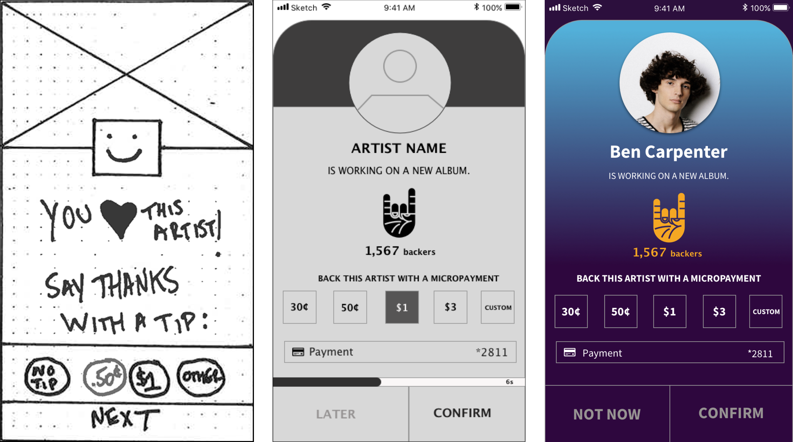
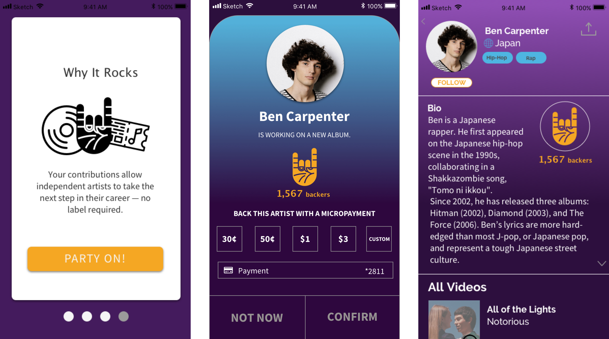
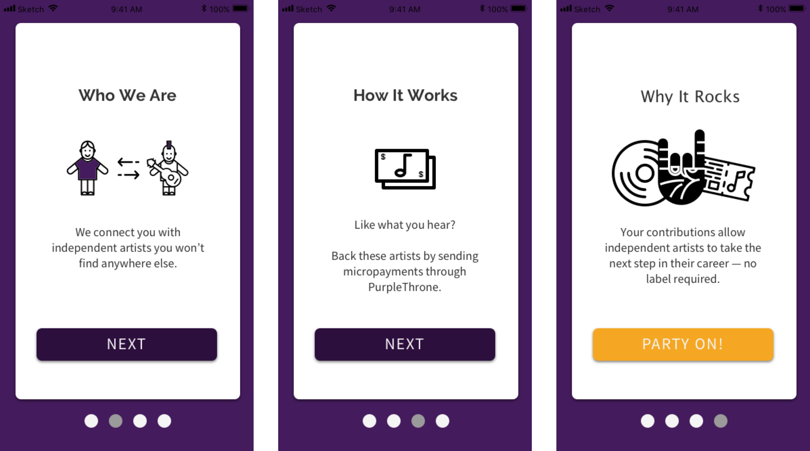
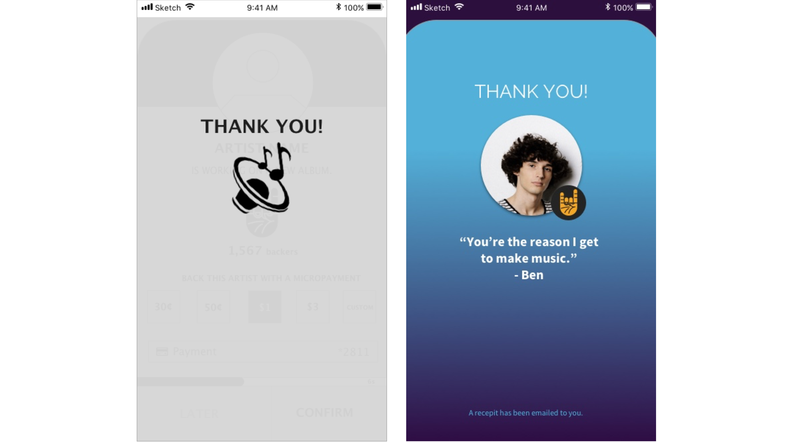

THE RESULTS
INSIGHTS & ITERATIONS

Tipping → “Back this artist”
Though all users could easily complete tasks, 2 of 4 users were turned off by the word “tip,” and they wanted to know where the money was going. Also, users expressed disgust over the idea that they’d see the tip pop-up screen after each song they liked.
Changing the copy on the tip screen to “back this artist” elicited positive feedback during usability testing of our mid-fi and hi-fi wireframes. We also decided to change the tip format: rather than have the pop-up screen triggers by the user liking a song, the pop-up screen would act like Spotify ad because many of our users are familiar with Spotify. After listening to a few songs, a user would see the tip screen and either have to send a tip right away, or wait 30 seconds before s/he can listen to the next song.

Why It Rocks (tipping icon)
Since supporting independent artists is a core value proposition setting PurpleThrone apart from competitors in mobile music streaming, we wanted to highlight that visually using a “rock” icon throughout our designs.
We introduced the “rock” icon when we redesigned PurpleThrone’s onboarding, and our usability testing revealed that the icon was learnable and memorable—many users commented on it as they moved through the app.

Onboarding & Home Screen
Users had no trouble understanding the onboarding screens we created for our mid-fi usability testing. People loved the lighthearted “Party On” call-to-action button, and they also liked the rocker hand icon. In our mid-fi prototype, we had users select their favorite genres during onboarding and then we designed the homepage to display songs/artists from that genre—users noticed and made positive comments about the personalization.

Generic Thank You → Personal Message
For our mid-fidelity wireframes, we created a quick “thank you” screen. Our testing revealed that users liked the screen but wanted a more personal message, and wanted to be notified about getting a receipt. We added a photo of the artist, a “thank you” quote from him/her, and copy telling users that a receipt would be emailed to them.